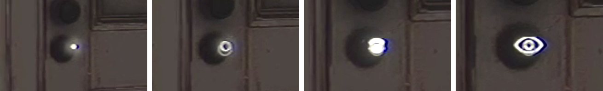
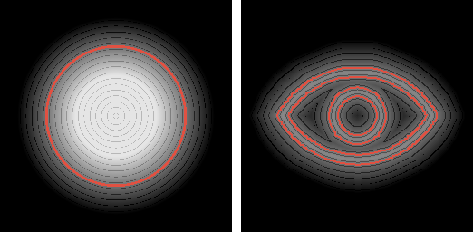
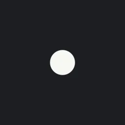

The goal
We needed a way to show what you can interact with without covering the screen in UI. The idea was that hints stay small and quiet from far away, only show what they are as you walk up, and feel like they're actually in the room.
How it works
Each icon's shape is drawn by a signed distance field shader, so it's sharp at any size. They're placed in the world next to their object instead of being drawn on top of the screen.
1. Dot to glyph
From far away you only see a little dot. As you get closer it grows into a ring, swells, and turns into the icon for that action, like this eye on a door you can peek through. When you're close enough that it'd get in the way, it fades out.


The shape blends from a circle's distance field to the icon's. Since they're both distance fields, every step in between is a clean shape instead of two images fading over each other. For the hollow ring in the middle, the field gets folded around its edge for a moment, which turns a solid shape into an outline.

2. Living in the world
Each icon is a small card facing the camera, sitting on its object and pulled a little towards you so the object doesn't hide it. Since they're in the world, walls and whatever you're holding cover them naturally, so they don't pop in and out around corners.
Whether an icon shows only depends on how far away you are, the same walking in and walking out. They're also hidden from the Game Boy camera, so they never end up in your photos.